Tool to run exploits/homebrew channel via the Wii U Browser!
Website & API to get Mii info's from a NNID (Nintendo Network ID)
Planned
A Wii Shop revival!

In development
A Miiverse revival, for Wii U, 3DS and PC/Mobile.
fans of nintendo doing things for fans of nintendo
utendo is currently in hiatus, we will maybe resume.

Tool to run exploits/homebrew channel via the Wii U Browser!
Website & API to get Mii info's from a NNID (Nintendo Network ID)
Planned
A Wii Shop revival!
In development
A Miiverse revival, for Wii U, 3DS and PC/Mobile.